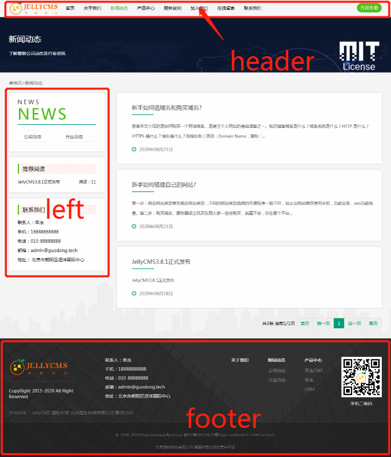

开始使用 - 模板入门
熟悉JellyCMS的标签设计方案有利于尽快掌握使用JellyCMS建站及二次开发北京国栋科技有限公司开发的其它系统。
JellyCMS的标签系统尽可能在易用性
和代码美学方面做到最优。JellyCMS的模板标签分为基础调用方案、高级调用方案。无论是IT初学者还是
有进阶学习需求的UI/UE/前端/后端工程师在理解及掌握整个信息系统设计实现方案上都有指导性价值。
1. 基本页面模板
网站的页面分为
1.首页
2.列表页（新闻列表页、产品列表页、案例列表页、招聘列表页），每种页面表达的侧重点不一样。但部分列表页可以是一致的。
3.详情页（新闻详情页、产品详情页、案例详情页、招聘详情页），一般会按每种页面的不同特点做特有功能，如产品详情页可能更类似于淘宝的产品详情。
4.单页，也是列表页的一种，在JellyCMS中我们将单页当作列表页，调用方式也于列表页一致。
4.留言页，这是一个信息交互的入口，但随着移动互联网的普及，它的功能性越来越弱。
5.其它页面（搜索列表页、标签页、地图页），这些页面不太常用
2. 页面组合
为了更好的维护模板，会将模板页内容一样的提取出来，定义公共模板部分，一般将页面分为以下几个部分。
1.头部(common/header.html)，头部模板一般包含网站栏目分类导航、注册登录等。
2.尾部(common/footer.html)，尾部模板一般包含网站版权信息、联系方式等。
3.侧边(common/left.html,common/right.html,common/side.html)，一般包含子类导航、推荐信息、联系方式等，首页模板一般没有侧边模板。
4.模板体

3. 资源规划
资源文件包括 js、images、css、font等
一般会将此类文件放入模板文件夹下的主题目录，如：template/default/